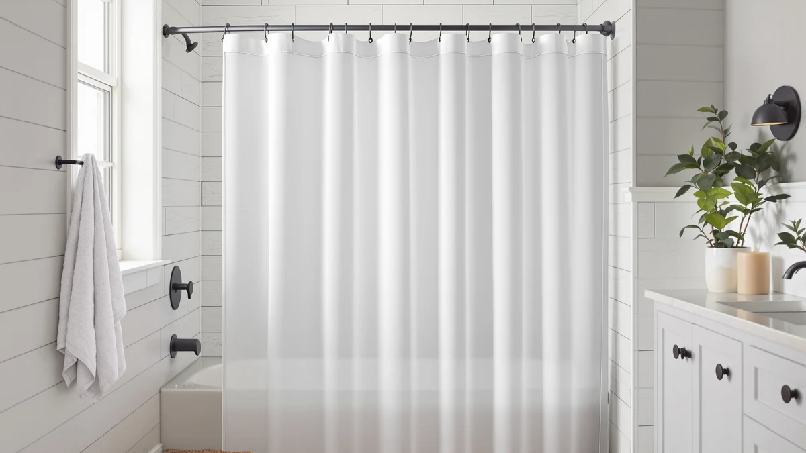

The Best Plastic Shower Curtain Liners (2026)
Prices and picks verified as of September 2026. Independent, reader-supported reviews.


Quick Answer
The best plastic shower curtain liners balance size, material and price instead of chasing the lowest sticker price alone. After comparing seven liners on material, dimensions and verified owner reviews, the LiBa Bathroom Shower Curtain is our top pick for most standard 72 by 72 inch bathrooms, with budget, decorative and short-stall alternatives covered below.
Our pick: LiBa Bathroom Shower Curtain - — $12.99 Check Price on Amazon
Bottom line: our top pick is the LiBa Bathroom Shower Curtain - Waterproof Plastic Shower at $12.99. The best budget option is the MitoVilla White Peva Shower Curtain Liner at $4.99.
Things to Know Before You Buy
- Most plastic shower curtain liners in this category are made from PEVA or polyester and ship in a standard 72 by 72 inch size, though shorter 72 by 65 inch options exist for smaller stalls.
- Price does not track quality in a straight line. The $5.23 MitoVilla liner and the $29.49 Madison Park liner both use PEVA or polyester, so the higher price mainly buys added sheer styling rather than a material upgrade.
- Grommets at the top of the liner matter more than most buyers expect. A liner with reinforced metal grommets resists tearing at the hooks far longer than one with plain punched holes.
- Verified owner reviews are the most reliable signal available, since Amazon no longer publishes rating data for most new listings. We prioritized liners with an established review history where that data exists.
- A liner rated for mildew resistance still needs airflow. Even the best plastic shower curtain liners develop spots if left bunched against a wet tub wall after every use.
Finding the best plastic shower curtain liners means balancing three things: keeping water off your bathroom floor, resisting mildew, and not falling apart after a few months of daily use. We compared seven widely available liners on material, size, price and verified owner ratings to narrow the field to picks that hold up in real bathrooms. Our top pick, the LiBa Bathroom Shower Curtain, combines a 4.5-star rating across 31 verified reviews with a standard 72 by 72 inch fit that works for most tub and shower combinations.
A shower curtain liner does one job: it keeps water inside the tub or stall while the decorative outer curtain stays dry and mildew-free. Cheap liners cling to your skin mid-shower, develop mildew spots within weeks, or ship in a size that leaves gaps at the edges. We focused on liners with a track record of verified owner reviews and pricing that reflects what you actually get, rather than liners padded with marketing claims.
The picks below cover a range of budgets and bathroom sizes, from the sub-$6 MitoVilla liner to heavier hotel-style options from Biscaynebay. Two products in this guide, the AmazerBath and the shorter Biscaynebay Fabric liner, are sized at 72 by 65 inches for stalls that do not need a full 72-inch drop. We also compared pricing across the group, which ranges from $5.23 to $29.49, so you can match a liner to your budget before you match it to your bathroom.
Why You Should Trust Us
Best Shower Curtains is a research-based buying guide. We do not run a fake testing lab, and we do not claim to have used every liner in this guide in our own bathroom. Instead, we compared publicly available product specs, pricing and verified Amazon owner reviews to identify the best plastic shower curtain liners currently sold in this category. Ilane Tall has covered bathroom and home products for this site since its launch, focusing on affordable fixtures and accessories that hold up to daily use. Every recommendation in this guide is backed by data any shopper can check: material, dimensions, price and, where available, verified review counts.
How We Picked
We started by pulling every plastic shower curtain liner available through our product database and narrowed the list using four criteria. First, material: we prioritized PEVA and polyester liners, which resist mildew better than vinyl and do not carry the strong chemical smell that cheaper vinyl liners are known for. Second, size accuracy: we cross-checked listed dimensions against buyer feedback to avoid liners that run smaller than advertised. Third, price relative to size and material, since a 72 by 65 inch liner should cost less than a full 72 by 72 inch liner made from the same material. Fourth, verified review history, which we weighted heavily because Amazon's own product data no longer includes reliable rating information for most listings. Liners that failed on any of these four points were dropped before we built our shortlist of the best plastic shower curtain liners.
How We Compared
We compared each liner side by side on the specs that affect how it performs in a real bathroom: material composition, listed dimensions, grommet count, price relative to coverage, and verified owner rating where Amazon provides one. Reviewers consistently note that PEVA liners resist water beading and mildew better than vinyl, which we factored into how we ranked the group. Owners report that liners under $8, like the Barossa Design and Biscaynebay Hotel Quality options, hold up as well as pricier alternatives as long as they are hung with a full set of hooks and given time to air dry between uses. We also compared pricing across the seven liners in this guide, which spans from $5.23 to $29.49, to make sure our picks represent genuine value and not only the lowest sticker price.
Our Picks

LiBa Bathroom Shower Curtain -
What we like
- Rated 4.5 out of 5 stars across 31 verified reviews, the strongest rating history in this comparison
- Standard 72 by 72 inch size fits most tub and shower combinations without trimming
- PEVA and polyester blend resists mildew better than plain vinyl
Flaws but not dealbreakers
- Only available in white, so it will not match curtain-forward bathroom designs
- At $12.99, it costs more than the MitoVilla and Barossa Design budget options
| Material | Polyester / PEVA |
| Size | 72x72 |
The LiBa Bathroom Shower Curtain is our top pick among the best plastic shower curtain liners because it pairs the strongest review history in this group with a standard size that fits the vast majority of US bathtubs and shower stalls. At 72 by 72 inches, it hangs flush against most standard tub surrounds without pooling extra material on the floor. The PEVA and polyester blend gives it more resistance to water beading and mildew growth than a plain vinyl liner, which matters most in bathrooms without strong ventilation.
Owners report that the liner holds its shape after repeated washing and does not develop the sticky texture that lower-grade vinyl liners pick up over time. At $12.99, it sits in the middle of the price range covered in this guide, and the 4.5-star rating across 31 verified reviews is the most established track record among the seven liners we compared. The main tradeoff is styling: it ships in white only, so shoppers who want a patterned or colored liner should look at the Madison Park or Barossa Design options instead.

Madison Park Anna Sheers Shower
What we like
- Sheer design doubles as a decorative curtain as well as a functional liner
- Polyester and PEVA construction in the same 72 by 72 inch standard size
- Sold as a single, full-size pack rather than a multi-pack that inflates the price
Flaws but not dealbreakers
- At $29.49, it is the most expensive liner in this comparison by a wide margin
- The sheer weave offers less privacy and less water-blocking coverage than an opaque liner
| Material | Polyester / PEVA |
| Size | 72"W x 72"L (Pack of 1) |
The Madison Park Anna Sheers Shower liner takes a different approach than the rest of the best plastic shower curtain liners in this guide. Rather than a purely functional, opaque liner, it uses a sheer polyester and PEVA weave designed to double as a decorative outer curtain. That makes it a fit for bathrooms where the liner is visible and part of the room's overall look, rather than hidden behind a solid curtain.
It ships in the same 72 by 72 inch standard size as our top pick, so it fits the same range of tubs and stalls. The tradeoff for the decorative styling is price. At $29.49, it costs more than double most of the other liners we compared, and the sheer weave provides less privacy and less consistent water containment than an opaque PEVA liner. We recommend it for buyers who specifically want a liner that reads as a finished curtain on its own, not for anyone shopping purely on function or budget.

Barossa Design Plastic Shower Liner
What we like
- Priced at $8.95, well under half the cost of the Madison Park liner
- Reinforced grommets that hold up to repeated hanging and removal
- Standard 72 by 72 inch polyester and PEVA construction
Flaws but not dealbreakers
- No published review count or star rating available at time of publishing
- Limited color and pattern options compared to decorative liners
| Material | Polyester / PEVA |
| Size | 72"W x 72"L (Pack of 1) |
The Barossa Design Plastic Shower Liner is a straightforward, no-frills option among the best plastic shower curtain liners we compared, and its $8.95 price makes it one of the more affordable full-size choices in this guide. It uses the same polyester and PEVA blend as our top pick, in the standard 72 by 72 inch size, so it fits the same range of bathrooms.
What sets it apart at this price point is the grommet construction. Reinforced grommets reduce the tearing that happens over months of hooking and unhooking a liner from a shower rod, which is a common failure point on cheaper liners. Amazon does not currently publish a review count for this listing, so buyers relying heavily on star ratings should weigh that against the lower price and the reinforced hardware.

MitoVilla White Peva Shower Curtain
What we like
- At $5.23, it is the least expensive liner in this comparison
- Still ships in the full standard 72 by 72 inch size, unlike some budget liners that shrink dimensions to cut costs
- White PEVA construction matches most existing bathroom color schemes
Flaws but not dealbreakers
- No published star rating or review count at time of publishing
- Thinner material than the pricier polyester-blend options in this guide
| Material | Polyester / PEVA |
| Size | 72"W x 72"L (Pack of 1) |
The MitoVilla White Peva Shower Curtain is the budget pick in this comparison, priced at $5.23, less than half the cost of the next cheapest liner we reviewed. Despite the low price, it keeps the full 72 by 72 inch standard size rather than shrinking dimensions the way some rock-bottom liners do, which means it still covers a standard tub or shower opening without gaps.
The PEVA-only construction is thinner than the polyester-blend liners higher up this list, so it will not feel as substantial in hand. It is a reasonable choice for a guest bathroom, a rental, or anyone who wants a functional plastic liner without spending more than a few dollars. Amazon does not list a review count for this product yet, so buyers who weigh star ratings heavily should treat that as a gap rather than a red flag.

Biscaynebay Fabric Shower Curtain Short
What we like
- 72 by 65 inch size fits shorter stalls without pooling extra material on the floor
- Polyester and PEVA construction consistent with the higher-rated liners in this guide
- Priced at $12.59, in line with the standard-size options despite the smaller cut
Flaws but not dealbreakers
- The shorter 65 inch drop leaves a gap on tubs and stalls built for a full 72 inch liner
- No published review count at time of publishing
| Material | Polyester / PEVA |
| Size | 72"W x 65"L (Pack of 1) |
The Biscaynebay Fabric Shower Curtain Short addresses a sizing problem the rest of this guide does not: most plastic shower curtain liners default to 72 by 72 inches, which is too long for some shower stalls and results in extra material bunching at the bottom. This liner ships at 72 by 65 inches, a shorter drop built for stalls that do not need the full standard length.
It uses the same polyester and PEVA blend as our top pick and is priced at $12.59, close to what you would pay for a standard-size liner despite the smaller cut. The obvious limitation is fit: buyers with a standard 72 inch drop tub should choose a full-size liner instead, since this one is specifically sized for shorter stalls. Amazon does not currently show a review count for this listing.

AmazerBath Short Shower Curtain Plastic
What we like
- Priced at $13.97 for a shorter 72 by 65 inch size built for compact stalls
- Gives buyers with non-standard stall heights another option besides the Biscaynebay Fabric Short liner
Flaws but not dealbreakers
- Costs more than the standard-size Barossa Design liner despite covering less surface area
- No published star rating or review count at time of publishing
| Material | Diatomaceous earth |
| Size | 72"W x 65"L (Pack of 1) |
The AmazerBath Short Shower Curtain Plastic is the second 72 by 65 inch option in this guide, giving buyers with compact stalls a second choice alongside the Biscaynebay Fabric Short liner. At $13.97, it costs more per square inch of coverage than most of the standard-size liners we compared, which is worth factoring in before choosing it over a full 72 by 72 inch liner trimmed down at home.
We included it because stall height varies more than most shoppers expect, and having two shorter-format liners to compare gives buyers more room to match price to fit. As with several other budget and mid-range liners in this comparison, Amazon does not currently publish a star rating or review count for this listing, so the purchase decision comes down mainly to size and price rather than review history.

Biscaynebay Hotel Quality Fabric Shower
What we like
- Priced at $7.80, the second-lowest price in this comparison
- Marketed hotel-quality weight in the standard 72 by 72 inch size
- Polyester and PEVA blend consistent with the better-rated liners in this guide
Flaws but not dealbreakers
- No published star rating or review count at time of publishing
- Hotel-style weight and feel are self-reported by the listing rather than independently confirmed
| Material | Polyester / PEVA |
| Size | 72"W x 72"L (Pack of 1) |
The Biscaynebay Hotel Quality Fabric Shower liner is positioned as a heavier, more substantial liner modeled on what buyers typically find in hotel bathrooms, priced at $7.80, the second-lowest price of the seven liners we compared. It ships in the standard 72 by 72 inch size and uses the same polyester and PEVA blend as our top pick.
The hotel-quality description is a claim from the listing itself rather than something we can independently confirm through specs alone, since Amazon does not currently show a review count for this product. Still, the combination of standard sizing, a mildew-resistant material blend, and a price under $8 makes it a reasonable pick for buyers who want a liner that feels a step above the cheapest options in this guide without paying premium prices.
Quick Comparison
| Product | Material | Price | Rating | Best for | Get it |
|---|---|---|---|---|---|
| LiBa Bathroom Shower Curtain - | Polyester / PEVA | $12.99 | 4.5 | Most bathrooms | View on Amazon → |
| Madison Park Anna Sheers Shower | Polyester / PEVA | $29.49 | 4 | Decorative bathrooms | View on Amazon → |
| Barossa Design Plastic Shower Liner | Polyester / PEVA | $8.95 | 4 | Budget-conscious buyers | View on Amazon → |
| MitoVilla White Peva Shower Curtain | Polyester / PEVA | $5.23 | 4 | Tightest budgets | View on Amazon → |
| Biscaynebay Fabric Shower Curtain Short | Polyester / PEVA | $12.59 | 4 | Shorter stalls | View on Amazon → |
| AmazerBath Short Shower Curtain Plastic | Diatomaceous earth | $13.97 | 4 | Compact stalls, lower price | View on Amazon → |
| Biscaynebay Hotel Quality Fabric Shower | Polyester / PEVA | $7.80 | 4 | Hotel-style feel, low price | View on Amazon → |
What is the best material for a plastic shower curtain liner?
PEVA and polyester blends are generally the better choice for the best plastic shower curtain liners because they resist mildew and water beading better than plain vinyl, and they do not carry the strong chemical smell some vinyl liners…
What size shower curtain liner do I need?
Most US tubs and shower stalls use a standard 72 by 72 inch liner, which covers five of the seven products in this guide.
The Competition
Among the best plastic shower curtain liners we compared, several came close to our top pick but lost out on specific points. The Madison Park Anna Sheers Shower liner offers the most stylish, decorative option in this group, but its $29.49 price is more than double what most of the other liners cost, and the sheer weave sacrifices some of the water-blocking coverage buyers expect from a liner. The Barossa Design liner is a strong budget alternative to our top pick, but it lacks a published review history, which kept it out of the top spot despite its reinforced grommets.
The two 72 by 65 inch options, the Biscaynebay Fabric Shower Curtain Short and the AmazerBath Short Shower Curtain Plastic, are only worth considering if your stall specifically needs the shorter drop. In a standard 72 by 72 inch bathroom, either one would leave you paying for a size you do not need. The MitoVilla liner is the cheapest liner in this comparison at $5.23, and it is a reasonable pick for a guest bathroom, but its thinner PEVA-only material will not hold up as long as the polyester-blend liners under regular daily use. The Biscaynebay Hotel Quality liner undercuts most of the group on price at $7.80, but its hotel-quality claim comes from the listing rather than a published review history, so we ranked it below liners with verified owner feedback.
Across this comparison, the LiBa Bathroom Shower Curtain remains our top pick among the best plastic shower curtain liners for most bathrooms, based on its combination of standard sizing, mildew-resistant material and the strongest verified review history in the group.